Treeningujuhised
Keharaskusega treenimine on mugav ja efektiivne võimalus arenguks nii kodus, pargis kui ka reisil olles.
Miks valida masinate asemel keharaskusega trenn
- Kere pidev töö: masinaharjutuse trajektoor fikseerub, mistõttu väheneb väikeste tugilihaste töö. Kätekõverduste, lõuatõmmete või kükkide ajal peab keha ise tasakaalu hoidma, treenides iga harjutusega süvalihaseid.
- Loomulikud liigutused ja liigeste tervis: masinad sunnivad liigeseid liikuma kindla trajektoori järgi, mis võib liigestele pinget suurendada. Keharaskusega treenimine võimaldab liigestel loomulikumat asendit säilitada ja vähendab ülekoormuse riski.
- Parem ülekantavus teise sporti: keharaskusega harjutused nõuavad koordinatsiooni, lihasgrupi samaaegset koostööd ja kehatunnetust. See aitab igapäevaelus ning spordialadel, kus on vaja plahvatuslikkust ja stabiilsust.
- Suurem liikuvus ja painduvus: enamik keharaskusega harjutusi arendab jõudu koos liigeste liikuvusulatusega ja võib vähendada lihaste kinnijäämist.
- Ajaline võit: keha raskusega treenimine on enamikele inimestele kättesaadavam kui jõusaalis käimine ning ei sõltu jõusaali lahtiolekuaegadest ega masinate saadavusest.
Masinaharjutuste alternatiivid
Paljud masinaharjutused saab asendada lihtsate keharaskusega harjutustega, mis aitavad arendada jõudu ja vastupidavust.
RINNALT SURUMINE vs KÄTEKÕVERDUSED
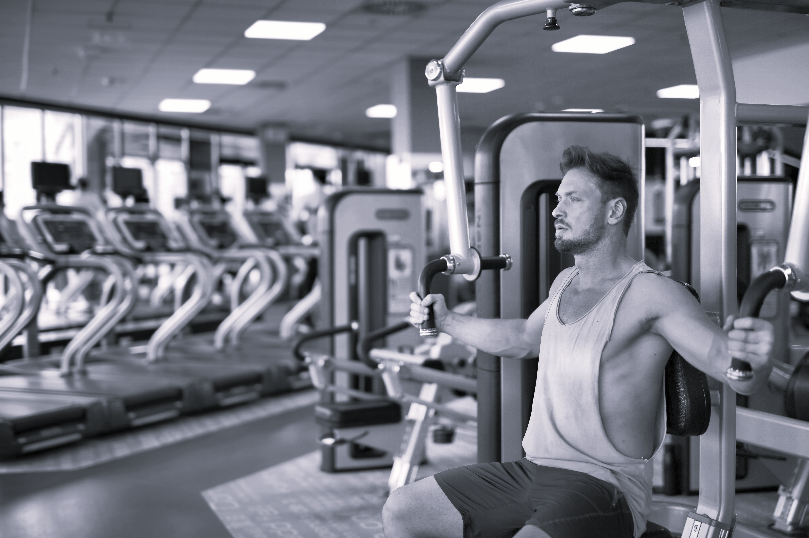
Rinnalt surumine masinal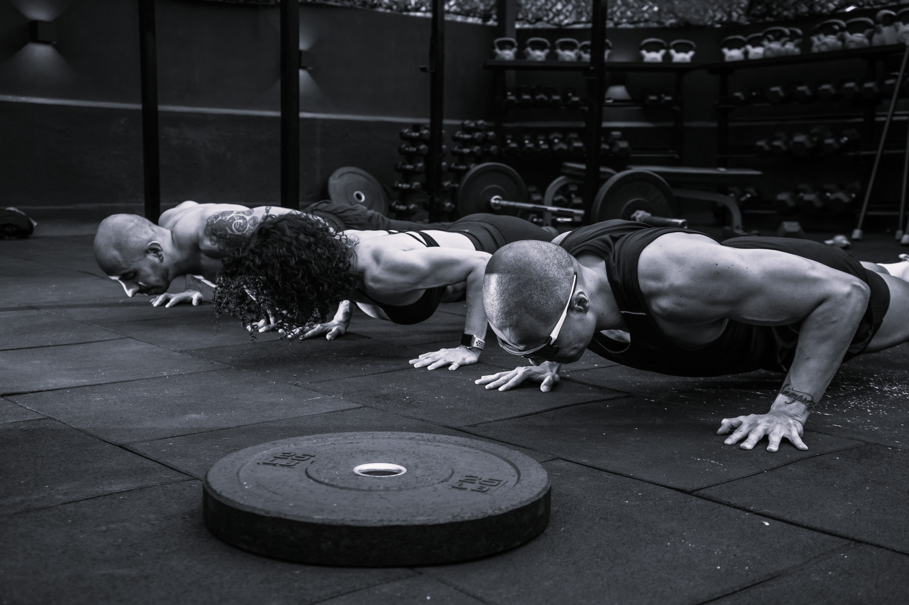
KätekõverdusedJALAPRESSID vs KÜKID
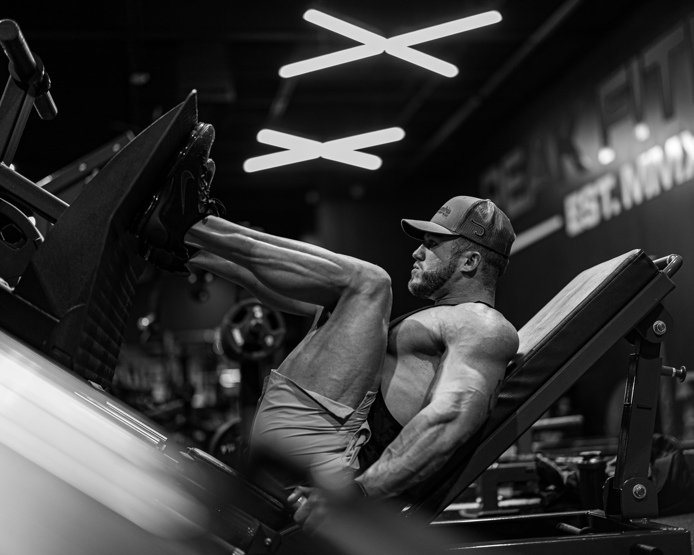
Jalapress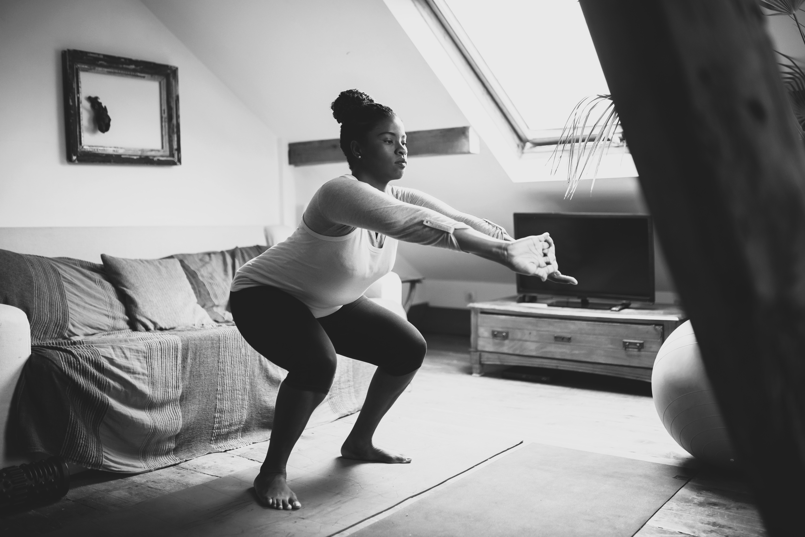
KükidÜLALT TÕMBED vs LÕUATÕMBED
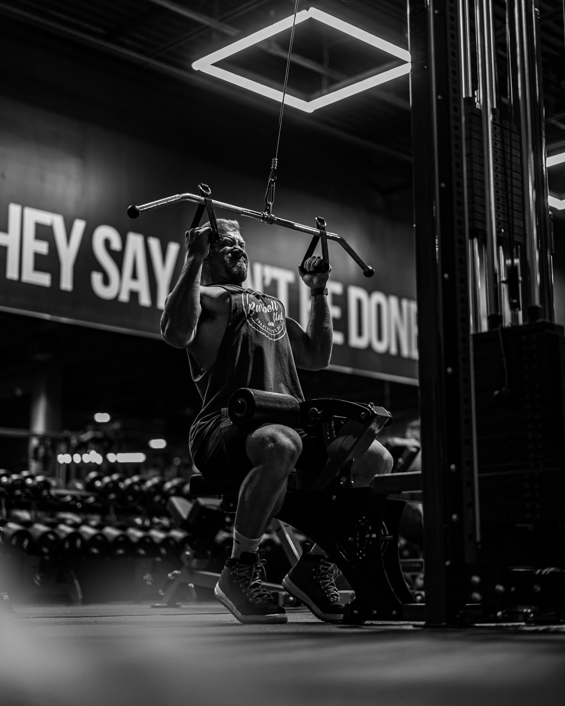
Ülalt tõmme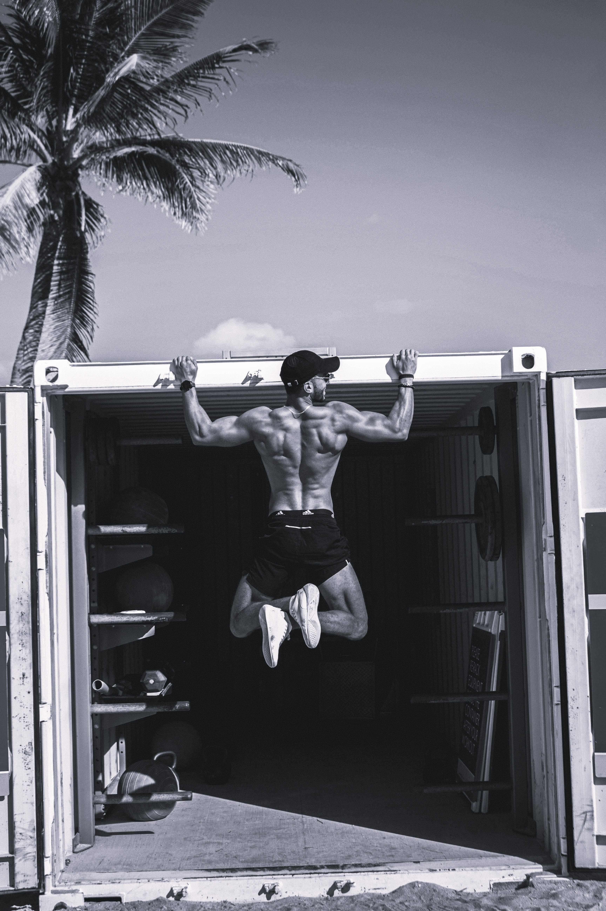
LõuatõmbedSÄÄRESIRUTAMINE MASINAS vs KODUNE SÄÄRESIRUTAMINE
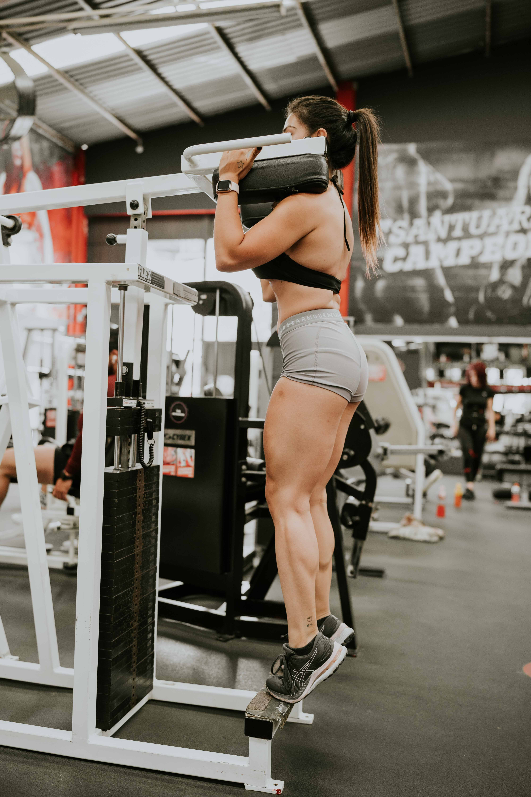
Sääresirutamine masinas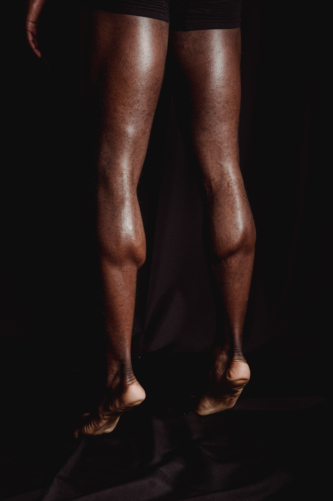
Sääresirutamine kodus raske asjagaKÕHULIHASTE MASIN vs KÕHULIHASED
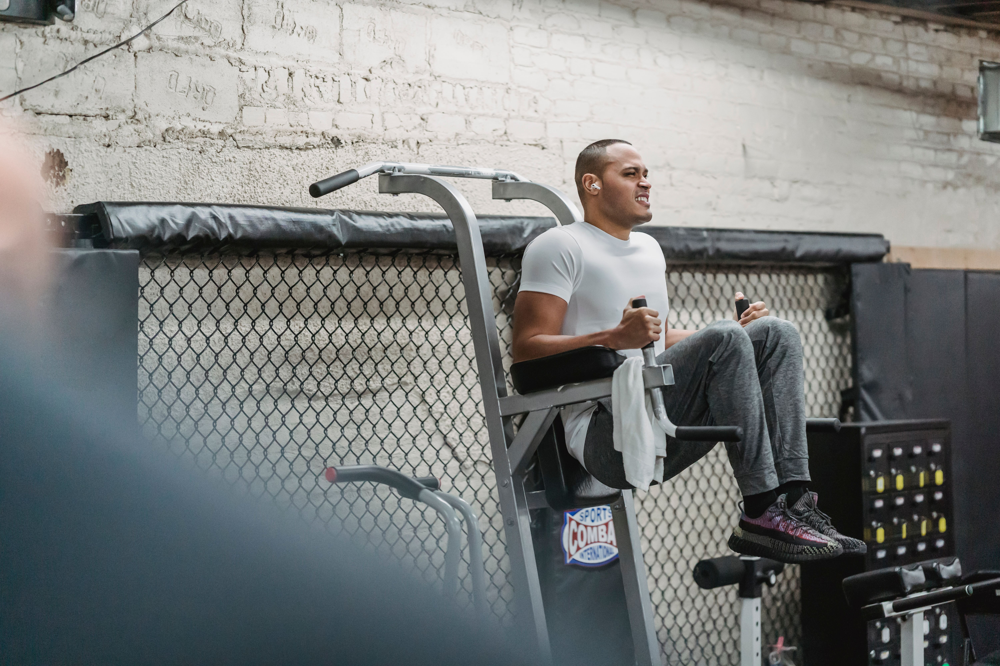
Crunch masin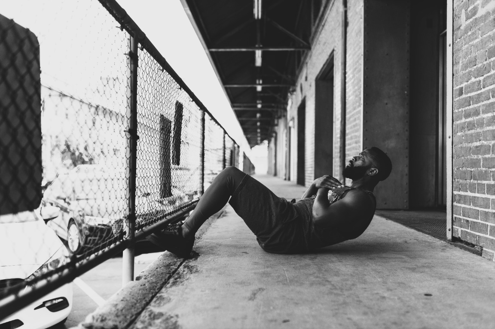
CrunchesKÄTE SIRUTAMINE PLOKIL PEA KOHAL vs KITSA HAARDEGA KÄTTEKÕVERDUSED
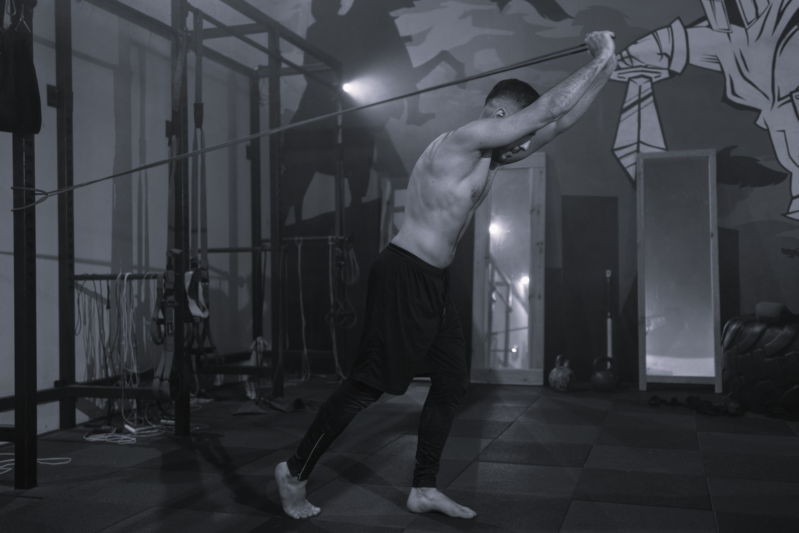
Käte sirutamine plokil pea kohal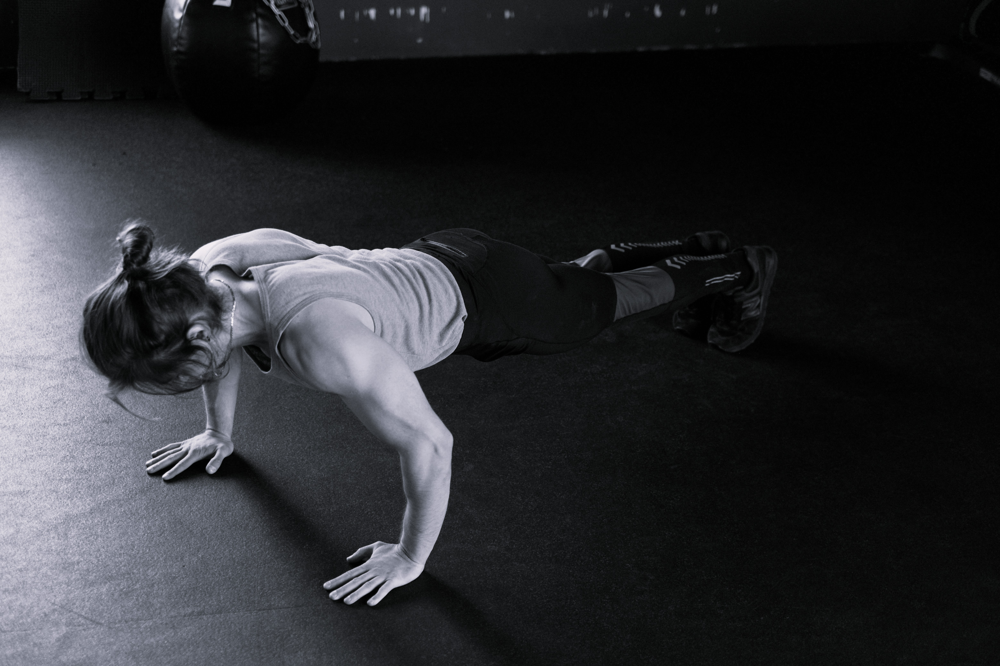
Kitsa haardega kätekõverdusedLihtsamad variandid
- Kätekõverdusi saab teha vastu seina.
- Kükke saab teha toolile istudes ja püsti tõustes.
- Lõuatõmbeid saab teha kummilindi abiga.
Kokkuvõte
Masinad ei ole halvad, nad on väga tõhusad kindla lihase eraldamisel, lihasmassi kasvatamisel või vigastuse taastumisel, kui koormust on vaja täpselt määrata. Parimad tulemused annavad tavaliselt vabade raskuste, keharaskuse ja masinate kombineerimine: põhifookus on vabadel raskustel ja keharaskusel ning masinad aitavad harjutuse viimistlemisel.